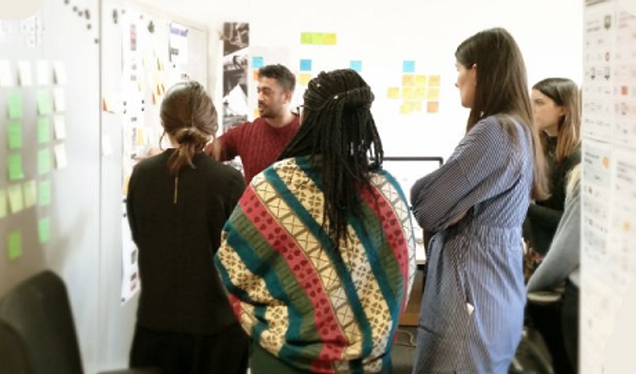
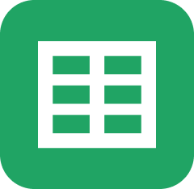
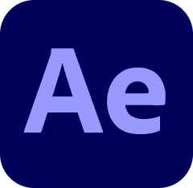
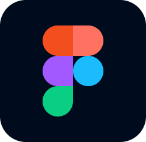
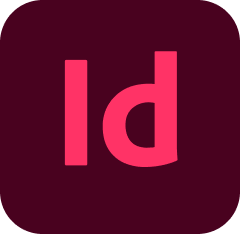
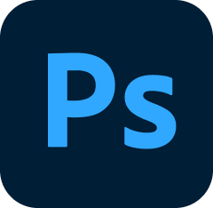
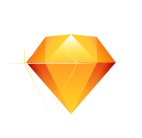
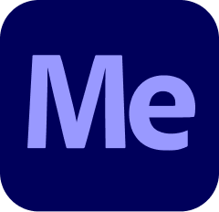
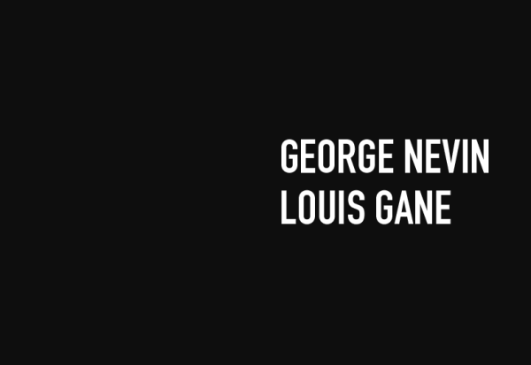

| ※ | Chris Droom | Design + Direction | |||
|---|---|---|---|---|---|
|
I am a digital/graphic designer with a strong focus on typography. I have a rigorous, reflective practice, grounded in design theory and the wider design canon. I am a good listener, and I am often able to get to the core of what’s trying to be expressed and the underlying problem(s). I seek to create welcoming environments in which people are able to confidently express themselves. Time spent in advertising has left me very skilled at implementing and developing brands, and I am extremely confident with visual applications. I am working to become a member of The International Society of Typographic Designers (ISTD) before I'm forty forty-two. |
|||||
|  | |||||
| Date | Company | Client | Project | Role | |
| 2022 | MARGINS | Detail in Web Typography typesetting.app |
Modern typesetting for digital applications
|
 | — |
| 2022 | MARGINS | South Norwood Type Archive South Norwood Type Walks |
— | — | |
| 2022 | MARGINS | typefoundries.xyz | — | — | |
| 2022 | MARGINS | Imprint |
|
||
| 2022 | MARGINS | Articles |
A monograph on culture and society
|
||
| 2022 | MARGINS | Designing Community |
|
||
| 2022 | MARGINS | Design Process |
I’m a big believer in writing as a core design practice. In 2021, I began cofidying many of the working methods and principles I had developed or learned along the way. |
||
| 2022 | MARGINS | Big Change Trust | — |  | — |
| Good Praxis Co-operative 149 Fonthill Rd. Finsbury Park London N4 3HH |
Co-founder / Design Director | ||||
| 2021 | Good Praxis | Big Change Trust | New Education Story |  | Front-end design |
| 2021 | Good Praxis | I.P.P.R. | Environmental Justice Commission Report |
|
— |
| 2021 | Good Praxis | G.A.T.C. | COP20 Event Stand |  | Stand design |
| 2021 | Good Praxis | G.A.T.C. | COP20 Campaign Social | Digital Design | |
| 2021 | Good Praxis | Protection Approaches |
How do we create a brand that is both precise and human but avoids charity sector tropes? This mark was to be used across print, screen/stationary. We can consider powerpoint templates, email signatures as digital stationary. The brand has two expressions old new boxes. Approach: Audit site / Audit competitors / Making of / 'designing' / logo sketch filter. |
Brand creation | |
| 2021 | Good Praxis | Do The Green Thing | The Colour of the Climate Crisis
‘An exhibition by Black artists and artists of colour exploring the relationship between racial justice and climate justice.’ We delivered the digital version of the exhibition, working with the team at Do The Green Thing. |
Front-end design | |
| 2020 | Good Praxis | Netil Radio | Brand Development |  | — |
| 2020 | Good Praxis | Islington Council | Digital Upskilling Programme
A response to job losses and precarity due to the pandemic. We wanted to create something completely different to standard council comms, yet still fulfil its function as public service design. This was also a good chance to push our company typeface a bit further (Calibre has great capitals) . We had lots of participants say they got in touch because social media posts caught their eye. Our design team also co-created and delivered the course in partnership with Outlandish. |
— | |
| 2020 | Good Praxis | YRS TRULY | ASAP | — | |
| 2019 | Shelter | Digital Product | Vertical Rush | — | |
| 2018 | Shelter | Digital Product | Urban Rush | — | |
| 2017 | Shelter | Digital Product | — | ||
| 2015 | VLT Labs Sdn Bhd Ut C-8-03 Lv 8 Capital 3 No 2 Jalan PJU 1A/7A Petaling Jaya Kuala Lumpur |
Product Designer | |||
| 2014 | VLT Labs | Frenloan |  | Brand Development | |
| 2014 | VLT Labs | Scarlett Of Soho | Front-end development | ||
| 2014 | VLT Labs | GoGet | Brand Development | ||
| 2014 | VLT Labs | GoGet | Front-End Development | ||
| 2013 | Great State Runway East 1 Victoria St Bristol BS1 6AA |
— | |||
| 2012 | Great State | Kia Motors | Designed Great State first interactive ‘Retina’ iPad adverts. |
DoubleClick | |
| 2011 | Great State | Orange Brand | — | — | |
| 2011 | Great State | Clarks | Takeovers / OLA |
|
— |
| 2011 | Great State | The Environment Agency | — | — | |
| 2011 | Great State | The National Trust | — | Artworking | |
| 2011 | Great State | Friends' Life Insurance | — | Motion Graphics | |
| 2011 | Great State | The Royal Navy | Brand/Website | Artworking | |
| Dare West Paintworks Unit 2.5, Arnos Vale Bristol BS4 3EH |
Junior Designer | ||||
| 2010 | Dare West | BarclayCard | — | OLA (AS2) | |
| 2010 | Dare West | Premier Inn | — | Mailer design | |
| 2010 | Dare West | Sainsbury's | — | Mailer design | |
| 2010 | Dare West | Sky | — | — | |
| 2010 | Dare West | Vodafone | — | OLA (AS2) | |
| 2010 | MARGINS | LGN Productions | Korahn Gayle |  | Motion / Titling |
| 2010 | True Digital | Furniture Village | — | Artworking | |
| 2010 | Blu Inc. | Anna Greville | Brochure Website | Front-end build | |
| 2009 | MARGINS | 4AD / Young Turks | M. Ward | Flash (AS2) OLA | |
| 2009 | MARGINS | 4AD / Rough Trade | Jarvis Cocker | Flash (AS2) OLA | |
| 2008 | FEREF | The Kingdom | The Kingdom | Flash (AS2) OLA | |
| 2008 | FEREF | Vivid Associates | Death Proof | Artworking | |
| 2008 | Ralph & Co. | ESPN | Rugby Union | Flash (AS2) OLA | |
| 2008 | Virgin Media | Sony Pictures | — | Flash (AS2) OLA | |
| 2008 | Virgin Media | Walt Disney Pictures | — | Flash (AS2) OLA | |
| 2008 | Virgin Media | Young Turks | — | Flash (AS2) OLA | |
| Dancing Bee Ltd. Clapham North Art Centre Unit 7H, 26-32 Voltaire Road London SW4 6DH |
Intern | ||||
| 2007 | Dancing Bee Ltd | The Biography Channel | — | Featurebox | |
| 2007 | Dancing Bee Ltd. | The Discovery Channel | — | Flash (AS2) OLA | |
| 2007 | Dancing Bee Ltd. | Braun | — | Artworking | |
| 2006 | Gemin-i | ActionAid | — | Platform design | |
| 2006 | Gemin-i | Plan ID | — | Flash (AS2) OLA | |
| 2006 | Gemin-i | Sucata Run | — | Artworking | |
| Date | — | — | Learning | Role | |
|  | |||||
| Testimonials |
It's been such a pleasure to work with you, Chris. Thanks so much for all your time, expertise and patience!Melissa Evans, previously at Big Change If you'd be up for this kind of work in the future we'd love to work with you on it. Melissa was full of praise for how you worked together and the videos I've seen have been great.Jane McCarthy, Marketing and Communications Manager, Big Change I was always curious about Photoshop but I never had the chance to learn how to use it. Moreover, I didn't think it was possible to learn it online! Chris has been a really good tutor for my learning: clear, patient, expert! Among other online courses experienced during the pandemic, I have to say that this was the only one with a value not only for my creative enjoyment but also for my job profile.— Manuela Terranova, Islington Council digital upskilling participant |
||||
| 2023 | MARGINS | Media Diversified | |||
| 2023 | MARGINS | Byline Times | |||
| 1997 | I remember seeing this site in 1997 and it made such a big impression on me. From the very beginning, I came to ‘web design’ via a visual communication interest. Most people that were making websites back then were coming at it from a technological point of view. |
||||
| 1996 | The library at my school had some multimedia PCs. On a few of them was Corel Draw 4. So I’d spend a lot of time just noodling, staying back after school and using it until they locked up. |
||||